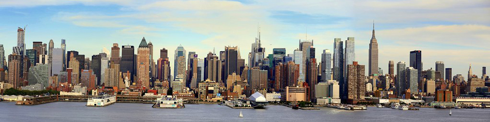
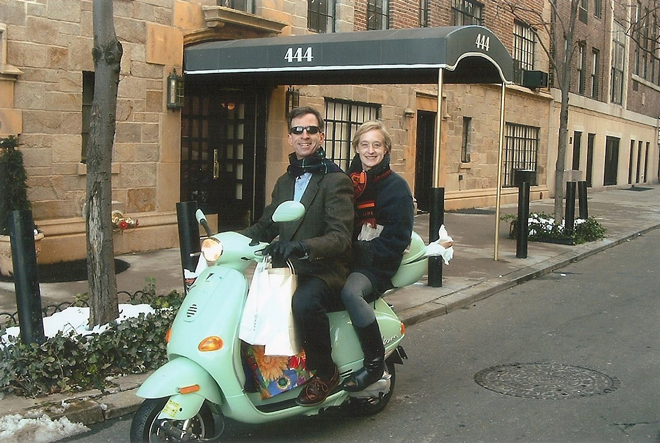
I studied Garden Design with Cathy Halloran while she was living in London. Her husband, Michael, was an executive for IBM and had been posted to London for a year. They invited us to come and visit them in New York and we accepted. The views from their garden terrace were terrific.
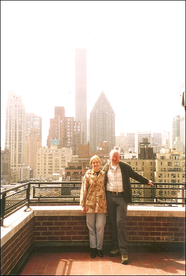
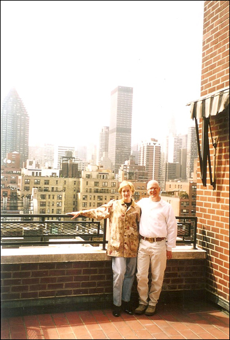
Cathy took us to Coney Island to see the shabby run-down amusement arcades, big dipper and some weird thrift shops.
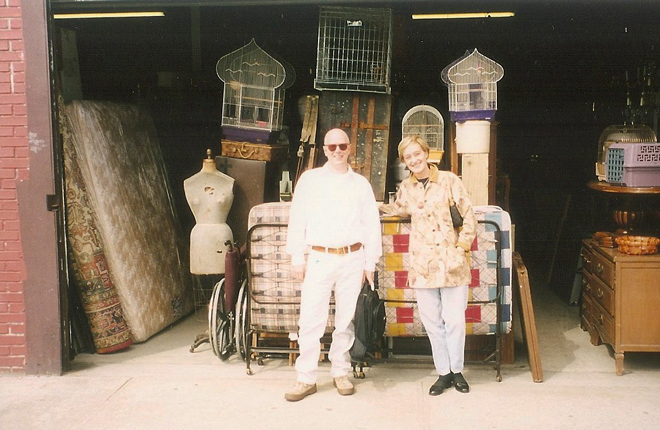
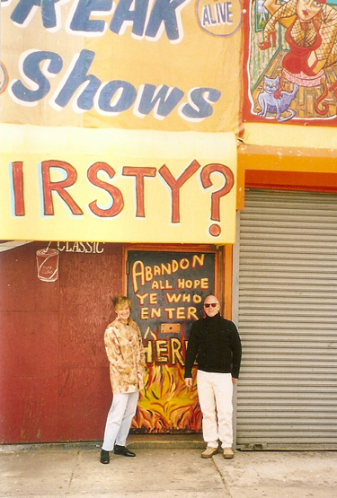
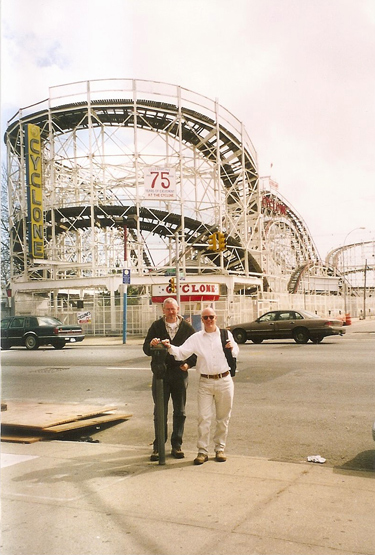
The weekend we were in New York was the one when smoking was to be banned in public bars and restaurants. We went to a local Irish bar to drink Guinness and to have a final puff on a cigarette - well, they did, I didn't - but I did enjoy a glass (or two) of Guinness. We met a couple of staunch young Republicans and had a furious argument about the Kuwait War.
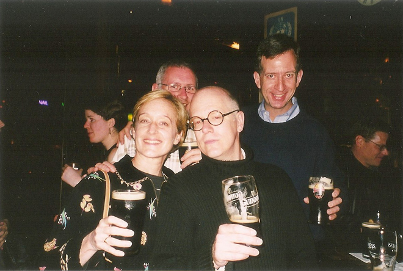
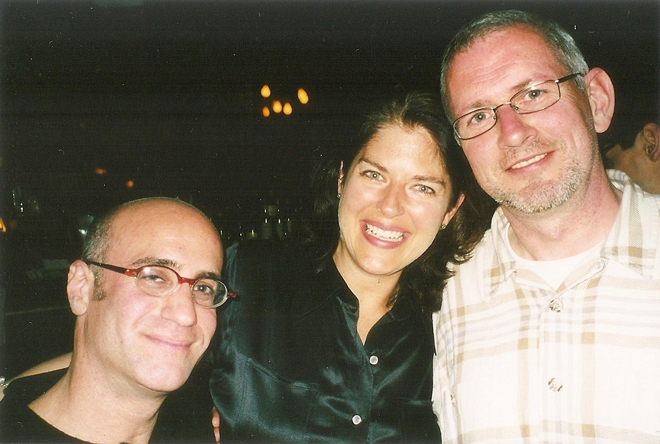
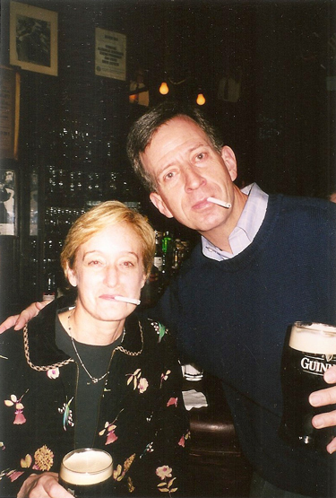
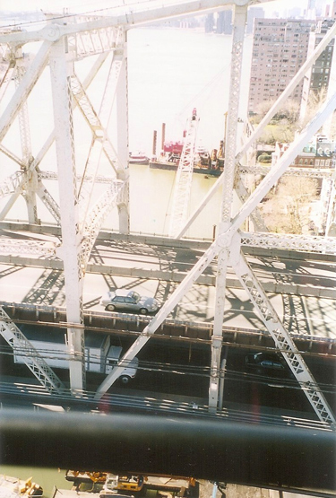
The next day we took the cable car over to Roosevelt Island which, although situated directly beneath Queensboro Bridge, is not accessible from the bridge itself. On this sunny day we had great views over Manhattan.
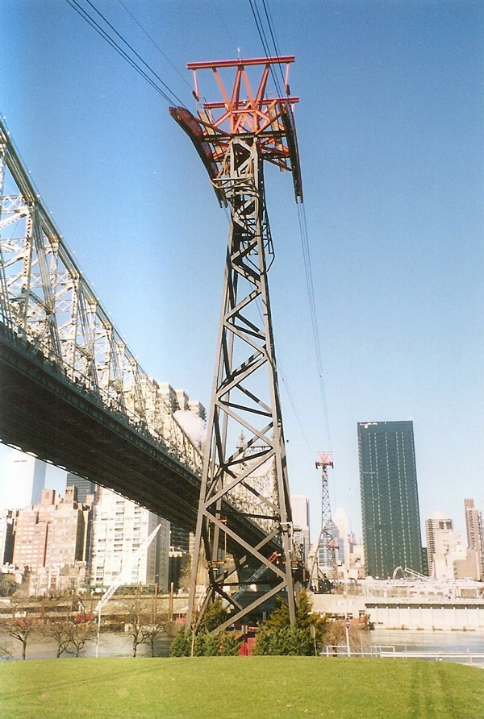
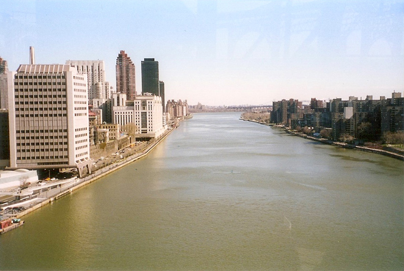
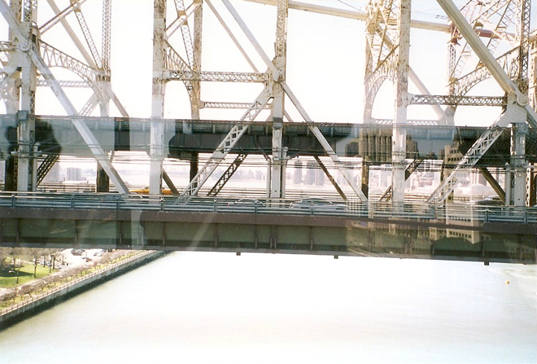